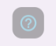

Here you can see all the teams sorted by points.
Pull to refresh the page some time after the race!
Tap on any card to see how the team performed so far!
Your team will be highlighted using the color you chose during player creation or in the settings page.
There are two floating button at the bottom of the page:

Open a dialog describing all the icons you can see in the results for each team
Open a dialog showing a summary of the points granted to each team in the last race. Teams are sorted by points
earned along with the icons for each event that contributed to the final result.
Here you can see all the drivers sorted by points.
Pull to refresh the page some time after the race!
Tap on any driver's card to see the results for each race
Drivers in your team will be highlighted using the color you chose during player creation or in the settings
page.

This icon next to the driver's points, means that the driver has been replaced on that
race. Points earned by the replacement will anyway contribute to the teams owning the replaced driver.
Bets for a race will open as soon as the previous grand prix ends.

Betting page looks like this:

1) Countdown: bet for the race must be submitted before the countdown expires. If you won't bet on time
there will be a -5 points penalty for the race and last race's bet will be inherited for the upcoming
one. It is possible to submit your bet up to 1 hour before qualifying.
2) Date and name of the upcoming race
3) Status of the bet: it could be
invalid: there is something wrong with your bet;
you must fix all the errors to enable saving.
unsaved : meaning that something changed from your
last save, and you must save again if you do not want to lose your changes.
No status indicator means that bet is correct and saved.
4) Captain status indicator: you must select your captain before each race. If the captain manages to complete
the race
against his teammate it will grant +2 points to the team. Captain is mandatory, a red indicator means you
still must pick one.
5) Captain selector: click on the name to select you captain. You can switch by clicking on the other driver's
name.
6) Bet status indicator: if red it means there are errors in yout bets.
Betting rules:
- Grid/Race/Sprint (if available) are mandatory
- Grid/Race/Sprint must be numbers (up to 2 digits) from 1 to 20 included
- You cannot bet the result for both drivers (e.g. it is not possible to insert 17 on grid
for both drivers)
The status indicator will stay red as long as there is something wrong with the bets.
7-8) Betting lines: here you put your numbers for each driver, the icon on the red will turn into red if the bet
is not correct.
9) Helper text: when visible it will inform you about duplicated bets on your screen.
10) Save button: use this button to save your bet. The icon will inform you about the status of your bet:

Bet is valid and can be saved.

Bet is invalid and cannot be saved.

Time expired and the bet cannot be modified nor saved.